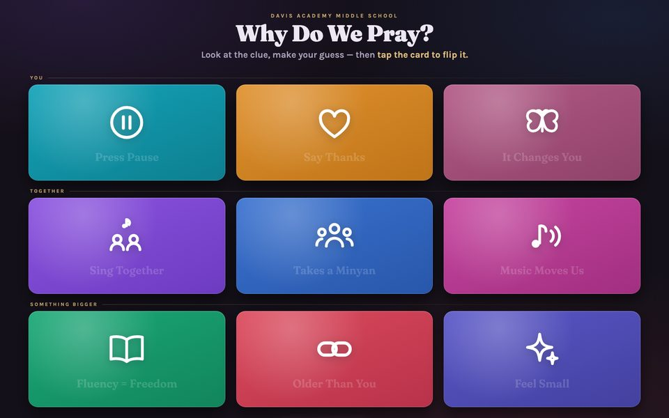

Everything from our session, ready on your phone or laptop. Tap Ask Google on a question to see an answer right away, with no account needed, or Copy to paste it into any assistant.
ARJE · Tuesday, January 26, 2027
Step one
Three ways to start
No account needed
Open your web browser and go to google.com/ai. Type your question, or tap the microphone and say it.
At Sinai the doing came first, and the understanding followed. AI is learned the same way. Here are eight short steps to take at your own pace. Every one works at google.com/ai with no account.
Which one?
The one you will actually open
Everything on this page works in all three, and you can try them all for free.
ChatGPT
Claude
Gemini
Made by
OpenAI
Anthropic
Google
Free version
Yes, with ads
Yes, no ads
Yes, no ads so far
Account needed?
No
Yes
No on the website
Builds a web page?
Yes, with a preview in the chat
Yes. It calls them artifacts.
Yes, in Canvas
Best known for
Most popular, most features
Clear writing, careful answers
Android and Google apps
Keep your chats out of training
Settings › Data controls › turn off “Improve the model for everyone”
Settings › Privacy › turn off “Help improve our AI models”
Menu › Gemini Apps Activity › turn off “Keep Activity”
A private chat
Temporary Chat
Incognito chat (the ghost icon)
Temporary chat
As of fall 2026. These change often. Google’s AI Mode (google.com/ai) also builds pages, in its own Canvas.
Out of training is not the same as private
Each assistant learns from your chats unless you turn that off, and the table shows where. Turning it off stops the training. The company still stores the chat. Keep student names, family situations, and anything confidential out either way.
Why I use Claude
This is my opinion, and you are welcome to a different one.
Its founders left OpenAI. In 2021, people who were concerned about OpenAI’s approach left to start Anthropic, the company that makes Claude. They wanted a more thoughtful way to develop AI.
It said no to the Pentagon. In 2026, Anthropic refused to let Claude be used for mass surveillance of Americans or for weapons that kill without a human deciding. The government labeled the company a “supply chain risk,” and the fight is still in court.
It does not run on ads. Google and Meta make most of their money from advertising built on what they know about us. Anthropic sells subscriptions, and has pledged to keep Claude free of ads.
No AI company has clean hands, this one included. The next section says why.
Eyes open
Four concerns, four Jewish values
People have real worries about AI, and our tradition already has language for them. Each concern below comes with a source, one number, and what it means in practice.
AI runs in data centers that use a great deal of electricity and water. Bal tashchit, the ban on needless waste, is part of tikkun olam, our responsibility for the world we share.
A number
One text prompt is small: about nine seconds of TV and five drops of water, by Google’s count. The total is not small. Data centers are on track to use about twice as much electricity by 2030.
In practice
Use it on purpose. A question that helps you teach is worth it. Throwaway images and videos cost far more, and are not.
Concern 2 of 4
Creators’ work: g’neivat da’at
אָסוּר לִגְנוֹב דַּעַת הַבְּרִיּוֹת
Asur lignov da’at hab’riyot
“It is forbidden to deceive people,” literally, to steal their minds.
These systems learned from millions of books, articles, and artworks, mostly without permission, credit, or pay. Pirkei Avot teaches the opposite habit: whoever says a thing in the name of the one who said it brings redemption to the world (Pirkei Avot 6:6).
A number
$1.5 billion: what Anthropic, the maker of Claude, agreed to pay authors to settle one lawsuit. A court approved it in July 2026. Other suits are still in court.
In practice
Say when AI helped. Credit the people whose work you build on. Feed it your own materials, and skip “in the style of” a living artist.
Researchers call it cognitive surrender: we let the tool do the thinking, and we do not notice that we did. The Talmud says to believe the person who says, “I worked hard and I found it” (Megillah 6b).
A number
In 2026, Wharton researchers gave 1,372 people reasoning problems with an AI helper. When the AI was wrong, their scores dropped, and their confidence went up anyway.
In practice
Think first, then ask. Use AI to check and stretch work you have already begun. Give students tasks where the thinking shows.
Chatbots as friends. A companion that always agrees, is never busy, and asks nothing of you.
A number
72% of U.S. teens have used an AI companion. Nearly a third say those conversations are as satisfying as talking with real friends, or more (Common Sense Media, 2025).
In practice
AI can help you get ready for a hard conversation with a person. It cannot be the person. Ask your students who they talk to.
Take this conversation back to your faculty
A student or a parent raises one of these concerns with you. How do you respond? Pick one concern, give each person two minutes, and then switch.
Go deeper with your teens
Digital Mensches
Ten guidelines for ethical online behavior, rooted in Jewish values and shaped by teens. The site has five programs ready to run, with handouts, posters, and scenario cards, and all of it is free. It is a project I created for URJ 6 Points Sci-Tech Academy, through a grant from the Templeton Foundation and Sinai and Synapses.
You describe what you want in plain words. The AI writes the code. You get a web page: one file that opens in any browser, with nothing to install and no login for your students. People call this “vibe coding.”
Five I made for my own school
I built each one with Claude, from a description like the starter prompts below.

Why Do We Pray?
Nine flip cards for middle school t’filah. Students see a clue, guess, and tap to flip.
A one-hour faculty meeting on our mission statement, run from one phone per group, with timed steps and a card sort. The live version needs a school sign-in, so this one is a picture.
Paste a starter prompt. Your page appears in the Canvas panel, where you can switch between the code and a preview.
Ask for changes in plain words.
For a link, choose Share & export, then Share. To keep the file, follow “Any assistant” below.
Google AI Mode google.com/ai, with a personal Google account
Go to google.com/ai and sign in. A work or school Google account may not offer this.
Tap the plus sign (+) in the question box and choose Canvas.
Paste a starter prompt. Try the page in the panel.
Ask for changes in plain words.
Use the Share button at the top of the Canvas for a link. To keep the file, follow “Any assistant” below.
Any assistant the method that always works
Ask: “Give me the complete code as one HTML file.”
Copy the code.
Paste it into a plain-text editor. On Windows, use Notepad. On a Mac, use TextEdit and choose Format, then Make Plain Text.
Save it with a name that ends in .html, such as purim-cards.html.
Double-click the file. It opens in your browser.
Save it, share it, come back to it
Save
Download the file. Its name ends in .html. Double-click it and it opens in your browser, even with no internet.
Share
It is a file, so anything you do with a file works. Email it, or put it in a shared drive. Whoever runs your website can post it. In Google Sites, choose Insert, then Embed, then Embed code, and paste the code.
Come back
Reopen the same chat and keep going. Or start a new chat, attach your .html file, and say what to change.
Say this
Here is my page. Change [what you want changed]. Give me the complete updated file.
Check what matters most. Own all of it.
No one can check every fact, date, and vowel in everything AI makes. We are still responsible for what reaches our students. Here is a process you can keep.
Give it your word list, your dates, your text, and tell it to add nothing. Then there is less to check.
Call a second witness
Torah does not accept one witness: “a case can be valid only on the testimony of two witnesses or more” (Deuteronomy 19:15). Paste your page into a different AI, from a different company, and ask what is wrong. Google’s AI Mode works well here because it shows its sources.
Ask the second AI
Notice: A second AI is a witness, not a judge. It catches some mistakes and misses others, and it will sometimes “find” a mistake that is not one. Where the two disagree is where to look.
Bring the great matters to yourself
Check these with your own eyes: sacred texts (look them up on Sefaria), names, the Hebrew you can read, whose Judaism the page shows, and anything the two witnesses disagree on.
Stay correctable
Say that AI helped. Tell students and colleagues you want to hear about mistakes. One file takes a minute to fix.
How much checking?
Match it to the stakes. A game for one class period gets the first two steps and a skim. Something that goes home to every family, or stays on your website, gets a knowledgeable person reading all of it. Either way, keep student names and personal details out.
What one file can’t do
Remember what students typed after the page closes
Collect answers from a whole class in one place
Sign people in
Those need a server. They are possible, and they are a topic for another day.
Our session fell in the week of Parashat Yitro. Moses is judging every case alone, and Yitro tells him: “You cannot do it alone.” His fix is to hand off the small matters and keep the great ones. AI can take small matters: a first draft, a set of flip cards, a rotation grid. Knowing our students, deciding what is true, and being present stay with us.
Try one thing this week
How this page was made
I built this page, the session slides, and the five examples with Claude, an AI assistant made by Anthropic. I set the direction and made the choices, and I am responsible for what is here. If you find a mistake, it is mine, and I would like to hear about it.
Sources for the facts on this page
Jewish texts. Hebrew from Sefaria. Tanakh translations are from the Revised JPS (2023). Translations of Pirkei Avot and the Talmud are my own, adapted.
Ads and privacy settings. Anthropic’s ad-free pledge, as reported by Axios, February 2026. Advertising was about 73% of Alphabet’s revenue in 2025 and about 98% of Meta’s, from their annual results. Claude’s setting is described in Anthropic’s privacy center.